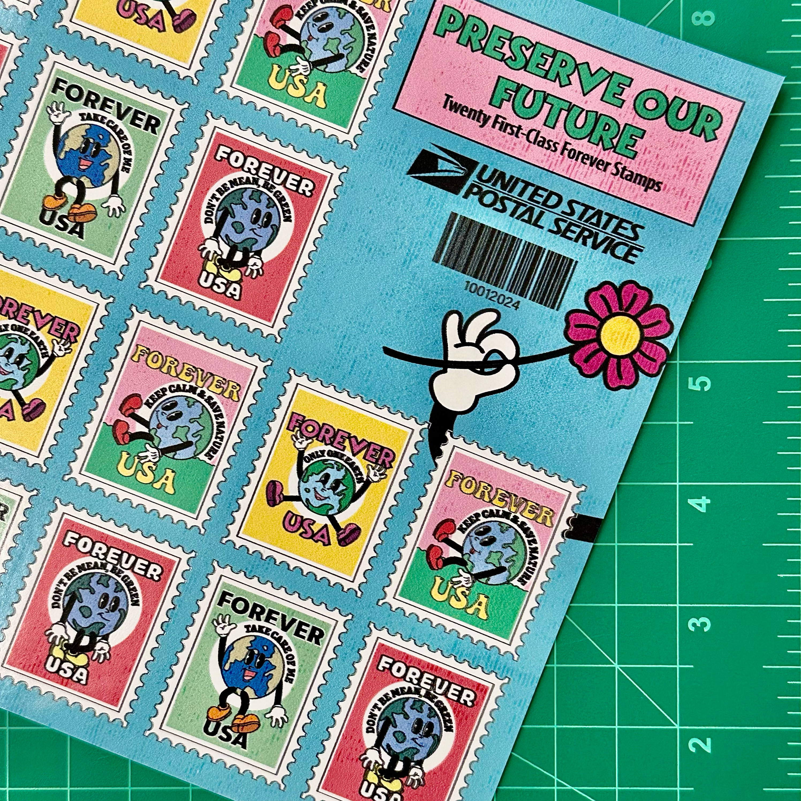
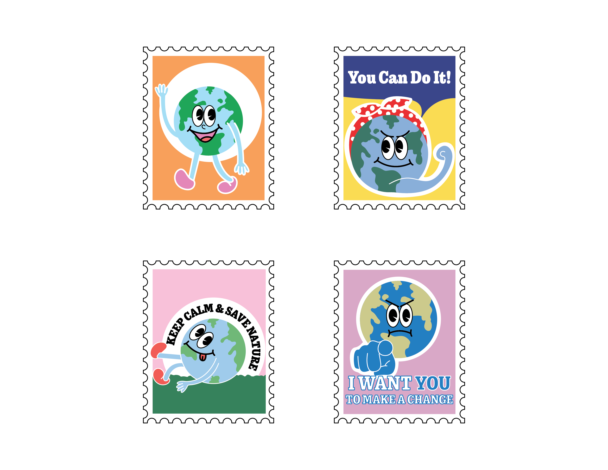
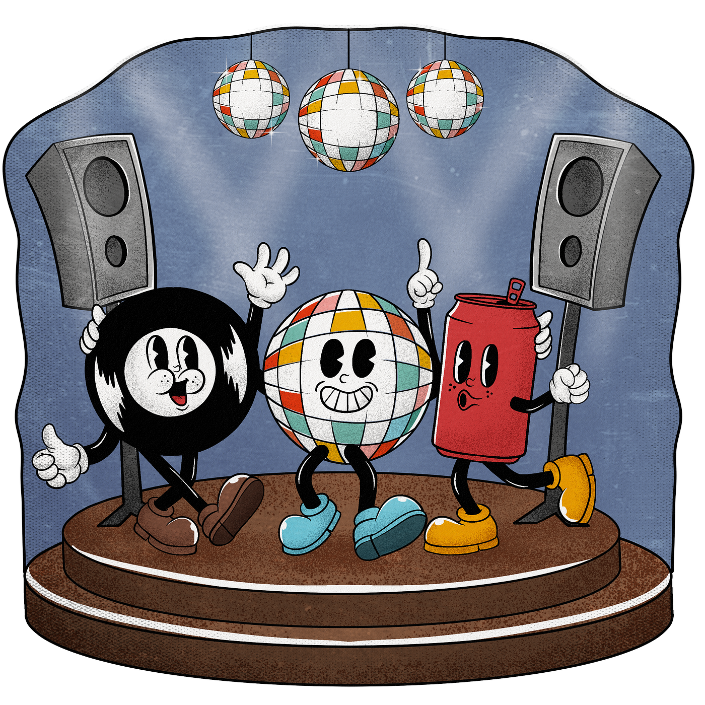
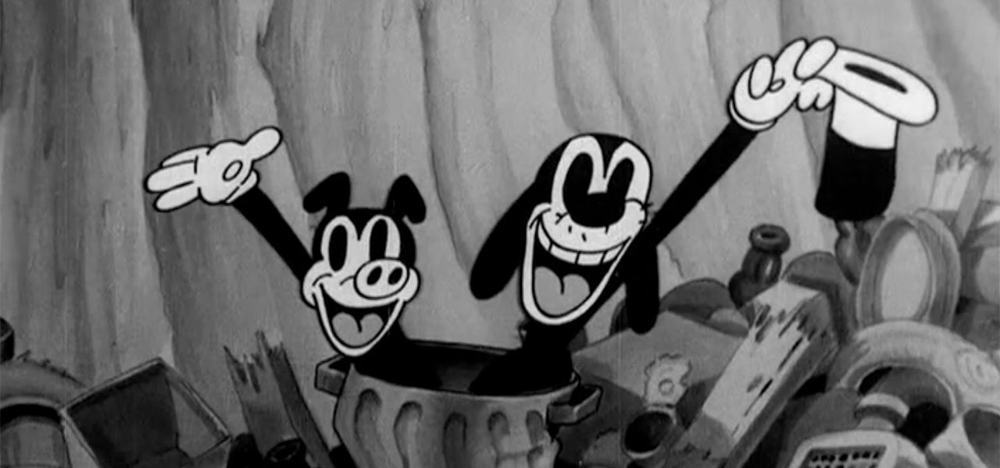
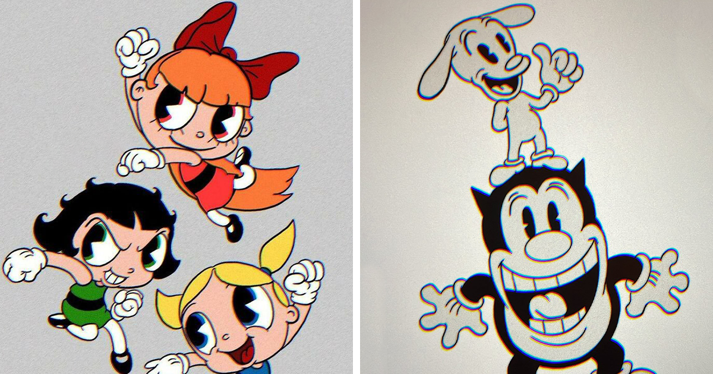
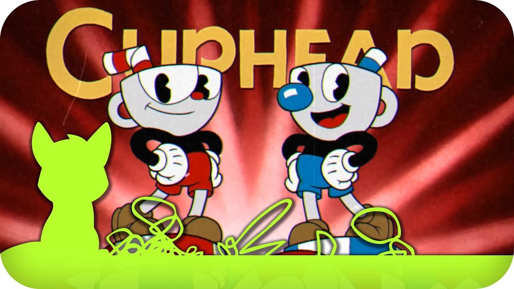
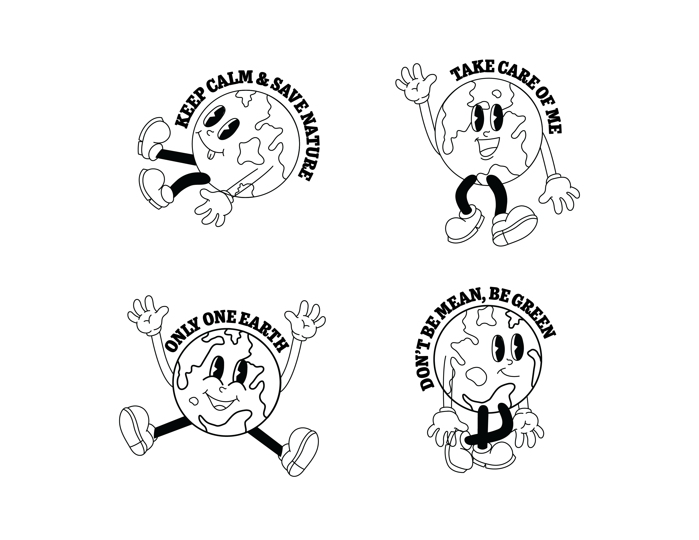
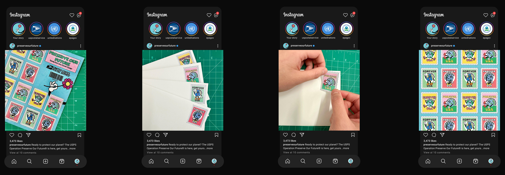

Preserve Our Future
Objective
Design a set of USPS Forever Stamps that pays tribute to a historical art movement and addresses a social issue.
Phase 1 / Original Design
My original idea was to pull from the Works Progress Administration (WPA) art movement for the stamps. Propaganda posters felt like a natural fit, given how much they've shaped American visual history. I started building it out in Illustrator, but a few hours in, I realized I had too much going on and no real focal point.

Research
After the critique session, I got pointed toward rubber hose animation, a style from the 1920s originally used to speed up hand-drawn animation. It ended up defining American cartoons through the early '30s. I wanted the stamps to visually reference that era, using rubber hose animation as the style guide for the whole design.
Characteristics of Rubber Hose Animation
- Arms, legs and even necks can bend, stretch
- Flex with no regard for anatomy or physics
- Cutesy and childlike
- Characters need to be visually distinctive
- Ellipses, blocks, and rubber-hose style tubes
Examples




Phase 2 / Design Outline
I dug deeper into what makes rubber hose animation distinct and started folding those traits into my design, making sure the characters didn't come across stiff or lifeless. The goal was energy, something that felt alive on the page.

Phase 3 / Final Design
For the final design, I gave the characters pie-eyes, just a pupil, no white. The look is named because each eye resembles a pie with one slice missing. I also added four-fingered gloves, a small detail that makes the characters feel more expressive and human.

Instagram Mockups

Here are the stamp mockups in action. I wanted the nostalgic, playful style to carry a real message underneath it: that protecting the planet is something worth paying attention to.
Lessons and Opportunities
This project pushed me to think about how design can carry a serious topic without feeling heavy-handed. Working in the rubber hose style specifically taught me that a playful visual language doesn't have to undercut a meaningful message. If anything, it can make people pay more attention.